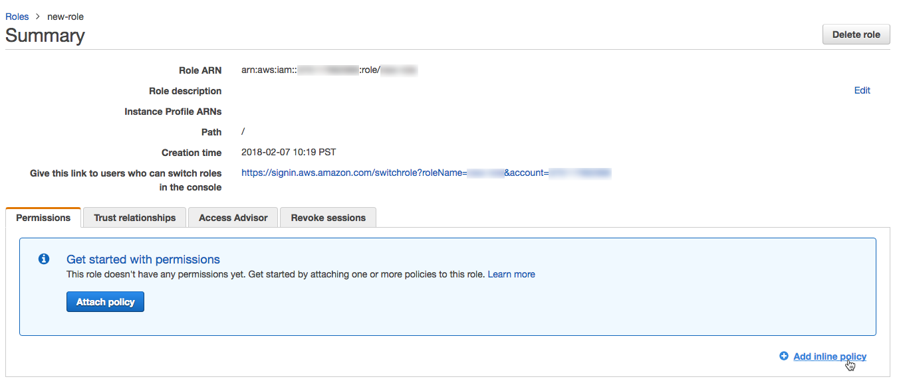
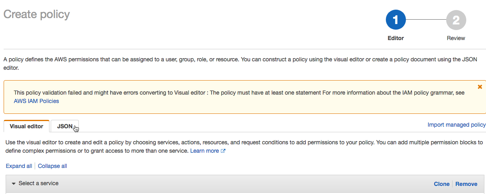

Customer-managed keys for workspace storage
To use customer-managed keys for workspace storage, the workspace must be on the E2 version of the Databricks platform. This feature also requires the Enterprise pricing tier.
For a list of regions that support customer-managed keys, see Databricks clouds and regions.
Introduction
For additional control of your data, you can add your own key to protect and control access to some types of data. Databricks has two customer-managed key features that involve different types of data and locations. For a comparison, see Customer-managed keys for encryption.
While Databricks may encrypt other data, you can add a customer-managed key for workspace storage to protect and control access to the following types of encrypted data:
Your workspace’s root S3 bucket: If you add a workspace storage encryption key, Databricks encrypts the data on the Amazon S3 bucket in your AWS account that you specified when you set up your workspace, which is sometimes called the workspace’s root S3 bucket. This bucket contains your workspace’s DBFS root, which includes workspace libraries and the FileStore area, MLflow Models, and Delta Live Table data in your DBFS root (not DBFS mounts). The bucket also includes your workspace’s system data, which includes job results, Databricks SQL results, notebook revisions, and some other workspace data.
Your cluster’s EBS volumes (optional): For Databricks Runtime cluster nodes and other compute resources in the classic compute plane, you can optionally use the key to encrypt the VM’s remote EBS volumes.
Important
Serverless SQL warehouses do not use customer-managed keys for EBS storage encryption, which is an optional part of the customer-managed keys for workspace storage feature. Disks for serverless compute resources are short-lived and tied to the lifecycle of the serverless workload. For example, when serverless SQL warehouses are stopped or scaled down, the VMs and their storage are destroyed. See Serverless compute and customer-managed keys.
Note
This feature does not affect data in the control plane. See customer-managed keys for managed services.
After you add a customer-managed key encryption for a workspace, Databricks uses your key to encrypt future write operations to your workspace storage data in your root S3 bucket. Existing data is not re-encrypted. If you choose to have your key help encrypt EBS instance volumes, the key applies only to new or restarted clusters.
This feature affects your DBFS root data in your root S3 bucket, but it’s not used for encrypting data on additional DBFS mounts such as additional S3 buckets. Your DBFS root contains workspace libraries and the FileStore area. Note that for S3 DBFS mounts, there are other approaches to writing encrypted data with your keys.
To help diagnose issues, if you use this feature, Databricks recommends that you enable CloudTrail S3 object-level logging on your root S3 bucket.
Additional notes about updating or sharing keys:
After you add a customer-managed key for storage, you cannot later rotate the key by setting a different key ARN for the workspace. However, AWS provides automatic CMK master key rotation, which rotates the underlying key without changing the key ARN as described in AWS docs. Automatic CMK master key rotation is compatible with Databricks customer-managed keys for storage.
You can share an AWS KMS key or a Databricks key configuration for workspace storage encryption across workspaces.
You can optionally share a Databricks key configuration object (which references your key) between the two different encryption use cases: this feature (workspace storage) and Customer-managed keys for managed services. In both cases you can add the key and its Databricks key configuration to your Databricks workspace during workspace creation or add it later, but only managed services supports rotating (updating) the key later.
If you have already enabled managed services encryption for an existing workspace, you can share the key for workspace storage, but you must create and register a new key configuration that uses the same key ARN for workspace storage.
This article describes how to add an encryption key for workspace storage to a running workspace. To create a new workspace with workspace storage encryption, instead see Create a workspace using the Account API. That article describes how to optionally share a key configuration across the two encryption use cases: workspace storage and Customer-managed keys for managed services.
You can also add an encryption key with the Databricks Terraform provider and databricks_mws_customer_managed_keys.
Step 1: Create or select a key
Create or select a symmetric key in AWS KMS, following the instructions in Creating symmetric CMKs or Viewing keys.
Important
The KMS key must be in the same AWS region as your workspace.
Copy these values, which you need in a later step:
Key ARN: Get the ARN from the console or the API (the
Arnfield in the JSON response).Key alias: An alias specifies a display name for the CMK in AWS KMS. Use an alias to identify a CMK in cryptographic operations. For more information, see the AWS documentation: AWS::KMS::Alias and Working with aliases.
On the Key policy tab, switch to the policy view. Edit the key policy so that Databricks can use the key to perform encryption and decryption operations.
Select a tab below and click Copy. Select the second tab only if you do not want to use this key to encrypt cluster EBS volumes.
Add the JSON to your key policy in the
"Statement"section.{ "Sid": "Allow Databricks to use KMS key for DBFS", "Effect": "Allow", "Principal":{ "AWS":"arn:aws:iam::414351767826:root" }, "Action": [ "kms:Encrypt", "kms:Decrypt", "kms:ReEncrypt*", "kms:GenerateDataKey*", "kms:DescribeKey" ], "Resource": "*", "Condition": { "StringEquals": { "aws:PrincipalTag/DatabricksAccountId": ["<databricks-account-id>(s)"] } } }, { "Sid": "Allow Databricks to use KMS key for EBS", "Effect": "Allow", "Principal": { "AWS": "<aws-arn-for-your-credentials>" }, "Action": [ "kms:Decrypt", "kms:GenerateDataKey*", "kms:CreateGrant", "kms:DescribeKey" ], "Resource": "*", "Condition": { "ForAnyValue:StringLike": { "kms:ViaService": "ec2.*.amazonaws.com" } } }
{ "Sid": "Allow Databricks to use KMS key for DBFS", "Effect": "Allow", "Principal":{ "AWS":"arn:aws:iam::414351767826:root" }, "Action": [ "kms:Encrypt", "kms:Decrypt", "kms:ReEncrypt*", "kms:GenerateDataKey*", "kms:DescribeKey" ], "Resource": "*", "Condition": { "StringEquals": { "aws:PrincipalTag/DatabricksAccountId": ["<databricks-account-id>(s)"] } } }
Note
To retrieve your Databricks account ID, follow Locate your account ID.
For more information, see the AWS article Editing keys.
Step 2: Create a new key configuration using the Account API
To register your KMS key with Databricks, call the create customer-managed key configuration API (
POST /accounts/<account-id>/customer-managed-keys), which creates a Databricks key configuration.Pass the following parameters:
use_cases: Set this to the following JSON array with one element["STORAGE"]. Note that if you are creating new workspace, you can create a single key configuration for both use cases (see Create a workspace using the Account API).aws_key_info: A JSON object with the following properties:key_arn: AWS KMS key ARN. Note that Databricks infers the AWS region from the key ARN.key_alias: (Optional) AWS KMS key alias.reuse_key_for_cluster_volumes: (Optional) If theuse_casearray containsSTORAGE, this specifies whether to also use the key to encrypt cluster EBS volumes. The default value istrue, which means Databricks also uses the key for cluster volumes. If you set this tofalse, Databricks does not encrypt the EBS volumes with your specified key. In that case, your Databricks EBS volumes are encrypted either with default AWS SSE encryption or if you enabled AWS account-level EBS encryption by default, AWS enforces account-level EBS encryption using a separate key that you provided to them. Note that ifreuse_key_for_cluster_volumesistrueand you revoke the permission for the key, it does not affect running clusters but affects new and restarted clusters.
Example request:
curl -X POST -n \ 'https://accounts.cloud.databricks.com/api/2.0/accounts/<databricks-account-id>/customer-managed-keys' \ -d '{ "use_cases": ["STORAGE"], "aws_key_info": { "key_arn": "arn:aws:kms:us-west-2:<aws-account-id>:key/<key-id>", "key_alias": "my-example-key", "reuse_key_for_cluster_volumes": true } }'
Example response:
{ "use_cases": ["STORAGE"], "customer_managed_key_id": "<aws-kms-key-id>", "creation_time": 1586447506984, "account_id": "<databricks-account-id>", "aws_key_info": { "key_arn": "arn:aws:kms:us-west-2:<aws-account-id>:key/<key-id>", "key_alias": "my-example-key", "reuse_key_for_cluster_volumes": true, "key_region": "us-west-2" } }
From the response, copy the
customer_managed_key_idfor use in step 4.
Step 3: Add an access policy to your cross-account IAM role (Optional)
If your KMS key is in a different AWS account than the cross-account IAM role used to deploy your workspace, then you must add a policy to that cross-account IAM role. This policy enables Databricks to access your key. If your KMS key is in the same AWS account as the cross-account IAM role used to deploy your workspace, then you do not need to do this step.
Log into the AWS Management Console as a user with administrator privileges and go to the IAM console.
In the left navigation pane, click Roles.
In the list of roles, click the cross-account IAM role that you created for Databricks.
Add an inline policy.
On the Permissions tab, click Add inline policy.
In the policy editor, click the JSON tab.
Copy the access policy below
{ "Sid": "AllowUseOfCMKInAccount< AccountIdOfCrossAccountIAMRole >", "Effect": "Allow", "Action": [ "kms:Decrypt", "kms:GenerateDataKey*", "kms:CreateGrant", "kms:DescribeKey" ], "Resource": "arn:aws:kms:<region>:<AccountIdOfKMSKey>:key/<KMSKeyId>", "Condition": { "ForAnyValue:StringLike": { "kms:ViaService": "ec2.*.amazonaws.com" } } }
Click Review policy.
In the Name field, enter a policy name.
Click Create policy.
Step 5: Update a workspace with your key configuration using the Account API
Use the Databricks Account API to update your workspace.
Call the Account API operation to update a workspace (PATCH /accounts/{account_id}/workspaces/{workspace_id}). The only request parameter you need to pass is storage_customer_managed_key_id property. Set it to the customer_managed_key_id from the JSON response when you registered your key configuration.
For example:
curl -X PATCH -n \
'https://accounts.cloud.databricks.com/api/2.0/accounts/<databricks-account-id>/workspaces/<workspace-id>' \
-d '{
"storage_customer_managed_key_id": "<databricks-key-config-id>",
}'